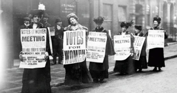

En 1893, la Nouvelle-Zélande adopte le suffrage universel et accorde aux femmes le droit de vote aux élections législatives. Cet évènement important marque le début d’une ère de changement pour les droits des femmes.
Naissance du mouvement
En cette époque de changements sociaux, de nombreuses associations militant pour le droit de vote des femmes voient le jour. En Grande-Bretagne, plusieurs de ces organisations se réunissent au sein de l’Union nationale des sociétés pour le suffrage des femmes (NUWSS en anglais) fondée en 1897 et dirigée par Millicent Fawcett. La NUWSS milite pacifiquement pour le droit de vote. Elles organisent des meetings de rue où elles exposent leurs idées pour essayer de convaincre les représentants politiques. Ces femmes sont souvent mal vues, même par les autres femmes, éduquées alors à rester discrète en dehors du foyer.
Mobilisation choc
Emmeline Pankhurst, fatiguée du manque de résultats fonde en 1903 la WSPU, Union sociale et politique des femmes. Cette organisation suffragiste va alors employer des méthodes plus violentes et provocantes pour obtenir le droit de vote.
Des actions, pas des mots
Tel était le slogan des femmes qu’on appelle rapidement Suffragettes. Elles commencent par revendiquer leurs idées lors d’évènements mais en viennent rapidement à s’attaquer aux symboles de la suprématie masculine. Elles incendient alors des terrains de golf et des églises réservés aux hommes. En conséquence, de nombreuses Suffragettes sont arrêtées. En prison, elles entament une grève de la faim et doivent alors être nourries de force. Le mouvement des Suffragettes entraîne l'arrestation de plus d’un millier de femmes mais gagne peu à peu l’opinion publique. Leur action la plus impactante est l’attentat à la bombe visant le Premier Ministre anglais en 1913. Puis, la même année, Emily Davis devient le premier “martyre” de la cause en se jetant sous un cheval lors d’un derby.
Dénouement
En 1918, la WSPU interrompt ses actions et participe à l’effort de guerre. Le mouvement se met alors au service du gouvernement et les femmes aident à l’arrière du front. De son côté, la NUWSS continue ses actions politiques. La contribution des femmes, et les actions de la NUWSS créent un contexte favorable et jouent en leur faveur. Finalement le 6 février 1918, le gouvernement adopte une loi permettant aux femmes de plus de trente ans de voter. Ce n’est que dix ans plus tard, en 1928 que le gouvernement égalise les conditions de vote des femmes avec celles des hommes.
L’héritage des Suffragettes
Le mouvement des Suffragettes a inspiré de nombreuses féministes dans d’autres pays. Par exemple, en France, plusieurs féministes se revendiquent Suffragettes. Elles créent divers associations et journaux. Plusieurs d'entre elles, telles que Hubertine Auclert se présentent illégalement à des élections, elles organisent des manifestations. En 1914, elles vont même jusqu’à organiser un référendum auquel plus de 500 000 femmes déclareront vouloir voter. Le gouvernement français accorde finalement le droit de vote aux femmes en 1944.
En 2015, Sarah Gavron réalise le film “Les Suffragettes”. La critique reçoit relativement favorablement ce long-métrage. Ce film constitue une bonne base pour découvrir les Suffragettes et les actions et évènements phares de cette période.
Lire aussi :Gisèle Halimi, une féministe née